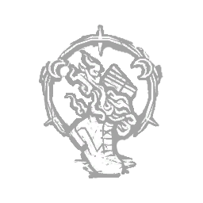

恩赐：影步 Boon: Shadow Step
所属：米凯拉·里德（逃生者）
| 等级 | 档位 1 | 档位 2 | 档位 3 |
|---|---|---|---|
| 数值 | 2 1 | 3 | 4 |
描述
一个隐藏真相的恩惠。在熄灭图腾或厄咒图腾上长按主动能力按钮，即可祝福它并创造一个恩惠图腾。24米内的所有逃生者都会听到柔和的钟声，并受益于其恩惠效果： - 划痕 - 气场 两种效果在离开恩惠图腾范围后仍会持续2/3/4秒。你的恩惠技能每次只能祝福一个图腾，且所有效果都会作用于同一个恩惠图腾。 “藏在阴影中，掩盖你的踪迹。”——米凯拉·里德